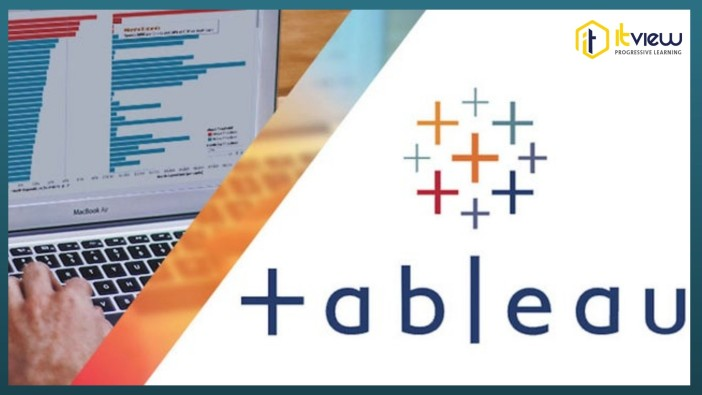

In this project we clean Nashville housing data in SQL server. The meticulous cleaning process ensures the integrity and accuracy of the dataset, laying a solid foundation for subsequent analyses and insights.

In this insightful project, I delved into the intricacies of a Covid-19 dataset using SQL, employing robust data exploration techniques. Through intricate queries and analyses, I uncovered valuable patterns and trends, contributing to a deeper understanding of the dynamics surrounding the pandemic and facilitating informed decision-making.

This repository serves as a comprehensive collection housing all my Tableau dashboards. From visually compelling data representations to interactive visualizations, each dashboard is meticulously crafted to convey complex insights with clarity and precision

This Excel project delves into comprehensive Bike Sales Analysis, encompassing vital stages such as meticulous data cleaning, in-depth exploration, strategic data wrangling, and insightful presentation through pivot tables and dynamic visualizations within interactive dashboards.

This Power BI project revolves around survey data, featuring intricate processes such as rigorous data cleaning, advanced wrangling using Power BI transformations, intricate DAX calculations, and compelling visualizations for insightful analysis.

These Python projects showcase diverse skills, including a BMI calculator, an automated file sorter in File Explorer, web scraping with BeautifulSoup to extract tables from Wikipedia, and an Amazon web scraping project utilizing Selenium for dynamic content retrieval.